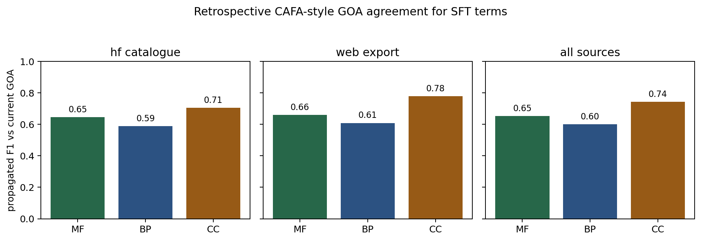
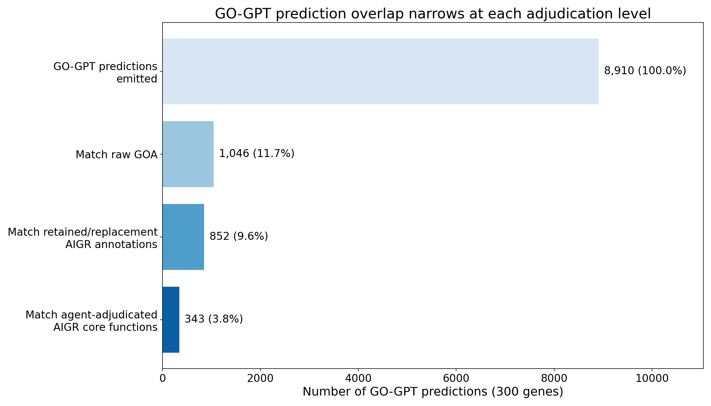

Supplemental benchmark and source-availability details
This supplement documents analyses that are useful for reproducibility but are not part of the main paper's primary BioReason-Pro benchmark story. The main manuscript uses ARGO139 for RL narrative review and ARGO95 for SFT GO-term review, while ESR-ECOLI-DET-Mini is the separate Expert Synthetic Review recap positive control. The views below explain why earlier drafts used mixed SFT denominators and preserve those results for reproducibility.
S1. Cohort accounting
The main RL benchmark is ARGO139, a fixed 139-gene set listed in ../genes.csv. The main SFT term benchmark is ARGO95, the 95-gene ARGO139 subset present in the HuggingFace wanglab/protein_catalogue SFT download.
ARGO139 uses agent-adjudicated local AIGR references, not independently expert-signed ground truth: 64 are COMPLETE, 48 DRAFT, 23 IN_PROGRESS, and 4 INITIALIZED at the frozen audit baseline. The RL performance set excludes the wrong-input csr-1 export (n=138) and separately flags seven retained exports truncated at the 2,000-residue model limit.
Table S1. Cohorts emitted by write_benchmark_sidecars.py.
| Cohort | Genes | Predictions | Role |
|---|---|---|---|
argo139_rl_narrative |
139 | - | Main RL narrative benchmark |
argo95_sft_terms |
95 | 955 | Main HF-catalogue SFT term benchmark |
supplement_sft_terms_argo139_mixed_sources |
139 | 10,697 | Mixed-source ARGO139 diagnostic; not a primary benchmark |
supplement_sft_terms_web_export_44 |
44 | 9,742 | ARGO139 genes absent from HF; web source includes ancestor hierarchy |
supplement_sft_narrative_hf |
45 | - | SFT narrative cross-check |
supplement_sft_terms_hf_catalogue_all |
154 | 1,358 | Full HF catalogue view |
supplement_sft_terms_union_all |
198 | 11,100 | ARGO139 plus 59 HF-only genes |
supplement_gogpt_overlap_300 |
300 | 8,910 | Separate GO-GPT overlap review |
The key availability issue is simple: the HuggingFace wanglab/protein_catalogue SFT download contained 95/139 ARGO139 genes. The remaining 44 ARGO139 genes were not present in that download. We do not fill those 44 into the primary SFT analysis, because the BioReason-Pro SFT web exports expose a much larger ancestor-rich term panel and are not comparable to the HF catalogue source.
S2. Supplemental SFT term views
Table S2. ARGO95 SFT assessment distribution, repeated from the main paper.
| Benchmark | Genes | Terms | CNN | NPI | PLI | COR | LSP | REP | UNC |
|---|---|---|---|---|---|---|---|---|---|
| ARGO95 (HF catalogue) | 95 | 955 | 678 (71.0%) | 118 (12.4%) | 5 (0.5%) | 24 (2.5%) | 44 (4.6%) | 29 (3.0%) | 57 (6.0%) |
For comparison, the mixed-source ARGO139 view is retained as a source-diagnostic table, not as a primary SFT benchmark.
Table S3. Supplemental mixed-source ARGO139 SFT assessment distribution.
| Source | Genes | Terms | CNN | NPI | PLI | COR | LSP | REP | UNC |
|---|---|---|---|---|---|---|---|---|---|
| HF catalogue / ARGO95 | 95 | 955 | 678 (71.0%) | 118 (12.4%) | 5 (0.5%) | 24 (2.5%) | 44 (4.6%) | 29 (3.0%) | 57 (6.0%) |
| Web export | 44 | 9,742 | 2,321 (23.8%) | 42 (0.4%) | 0 (0.0%) | 7 (0.1%) | 388 (4.0%) | 1 (0.0%) | 6,983 (71.7%) |
| Mixed-source ARGO139 total | 139 | 10,697 | 2,999 (28.0%) | 160 (1.5%) | 5 (0.0%) | 31 (0.3%) | 432 (4.0%) | 30 (0.3%) | 7,040 (65.8%) |
Table S4. Terms per gene in the SFT source views.
| Source | Mean terms/gene | Median terms/gene | Max terms/gene |
|---|---|---|---|
| ARGO95 / HF catalogue | 10.1 | 7.0 | 38 |
| Web export | 221.4 | 212.5 | 598 |
| Mixed-source ARGO139 total | 77.0 | 12.0 | 598 |
The all-HF view is still useful as the broadest single-source HF view, but it is not the main benchmark because 59 of those genes are outside ARGO139.
Table S5. Supplemental full HF catalogue view: 1,358 terms across 154 genes.
| Assessment | Count | % |
|---|---|---|
| CNN | 917 | 67.5 |
| NPI | 172 | 12.7 |
| UNC | 143 | 10.5 |
| LSP | 57 | 4.2 |
| COR | 31 | 2.3 |
| REP | 33 | 2.4 |
| PLI | 5 | 0.4 |
The all-source union is the broadest source-availability view, but it combines ARGO139 with 59 HF-only genes and is therefore not a paired benchmark.
Table S6. Supplemental all-source union: 11,100 terms across ARGO139 plus 59 HF-only genes.
| Assessment | Count | % |
|---|---|---|
| UNC | 7,126 | 64.2 |
| CNN | 3,238 | 29.2 |
| LSP | 445 | 4.0 |
| NPI | 214 | 1.9 |
| COR | 38 | 0.3 |
| REP | 34 | 0.3 |
| PLI | 5 | 0.0 |
S3. CAFA-style retrospective GOA agreement
We computed a retrospective CAFA-style agreement score for ARGO95 SFT GO-term predictions using current local GOA as the reference. This is not a true CAFA benchmark: ARGO95 is retrospective, there is no temporal holdout, and the BioReason-Pro SFT files do not contain model confidence scores. The score therefore treats predictions as an unranked single-threshold set and reports propagated precision/recall/F1 rather than (F_{\max}). Both predictions and reference GOA annotations are propagated over is_a and part_of ancestors from the frozen 2026-03-25 go-basic.obo, excluding the three GO aspect roots. The archived file's SHA-256 is pinned in benchmark-policy.yaml; load-time sentinels verify release-specific active and obsolete terms. The reproducible verify_ontology_authority.py check independently downloads the official archive and queries QuickGO and OLS; on 2026-07-12 the remote checksum matched and both live services reported the five disputed sentinels as obsolete. GOA can retain identifiers after ontology obsoletion, so the mixed-date legacy cache/ontologies/go.tsv status flag is not used as the ontology authority. Ontology status is recorded separately from assessment: a status-only label mismatch retains its biological CNN, COR, or UNC call, while LSP remains reserved for a canonical concept that is more generic than the supported annotation. The mixed-source ARGO139 rows are retained only as diagnostics.
Table S7. Propagated all-aspect agreement against current GOA.
| Source | Genes | Scored direct predictions | Direct GOA terms | Precision | Recall | F1 |
|---|---|---|---|---|---|---|
| ARGO95 / HF catalogue | 95 | 952 | 2,382 | 0.865 | 0.479 | 0.617 |
| Web export | 44 | 9,730 | 3,885 | 0.780 | 0.533 | 0.633 |
| Mixed-source ARGO139 total | 139 | 10,682 | 6,267 | 0.810 | 0.511 | 0.627 |
The score shows why aggregate GOA agreement is useful but incomplete. In the HF catalogue subset, 53/152 terms classified by AI-AUGR as NPI, PLI, or REP are exact matches to current GOA, and 124/152 have propagated overlap with current GOA. A GOA-agreement metric would reward some of these predictions despite evidence-grounded review classifying them as wrong or frequency-biased.

Full derived tables are in ../cafa-style/.
S4. SFT narrative cross-check
The HuggingFace SFT narrative sample contains 45 proteins, all with parseable 1-5 correctness/completeness scores. It is not paired to ARGO139 and is not used as a main result. It remains a useful cross-check: mean SFT scores are 3.0/5 correctness and 2.7/5 completeness, and 7/45 SFT outputs contained generated "UniProt Summary" prose for proteins that UniProt describes only as uncharacterized.
S5. Blinded RL second review
A second rater scored 20 RL Functional Summaries without access to the first-rater reviews or project metrics. The deterministic sample contains four genes from each first-rater correctness stratum. Correctness agreement was 80% exact, 100% within one point, and quadratic-weighted kappa 0.950. Completeness agreement was 55% exact, 95% within one point, and kappa 0.744. The full protocol, raw ratings, and generated metrics are in ../second-review-protocol.md, ../second-review-ratings.csv, and ../second-review-agreement.json.
S6. GO-GPT reviews
The ARGO139 web-export leaf review is explicitly pending rather than a completed benchmark. Ontology-aware rebuilding retained 5,923 terms: 1,900 exact positive AIGR matches (CNN), 129 exact rejected/over-annotated matches (NPI), and 3,894 unresolved terms (UNC). Accordingly, 138 documents are DRAFT and only the fully deterministic BACSU/ftsZ file is COMPLETE.
A distinct supplemental analysis, supplement_gogpt_overlap_300, contains 8,910 GO-GPT predictions across 300 genes. It is not the pending 5,923-term ARGO139 leaf set above and is not a paired ARGO139 BioReason-Pro result. This separate overlap analysis remains useful for showing how much apparent agreement changes when the reference set moves from raw GOA to AIGR core biology.
Table S8. GO-GPT prediction overlap at three reference levels (300 genes).
| Reference level | Terms in reference | Predictions overlapping | % of 8,910 predictions |
|---|---|---|---|
| Raw GOA | 2,967 | 1,046 | 11.7 |
| Retained/replacement AIGR annotations | 2,712 | 852 | 9.6 |
| All GO-valued AIGR core-function slots | 1,199 | 343 | 3.8 |

GO-GPT emitted 8,910 predictions across 300 genes (mean 29.7 per gene). Raw GOA agreement was 11.7%; exact agreement with all GO-valued AIGR core-function slots was 3.8%. The post-review layer retains ACCEPT, KEEP_AS_NON_CORE, UNDECIDED, and pending annotations, substitutes proposed replacements for MODIFY, excludes negated and rejected annotations, and unions in the core-function terms. This is a useful illustration of the CAFA-style scoring gap, but it is not used as a main BioReason-Pro benchmark result.
S7. Reproducibility files
../genes.csv: ARGO139 member list.../argo139-species-counts.csv: ARGO139 species distribution.../argo139-curation-context-counts.csv: ARGO139 curation-context summary.../benchmark-cohorts.csv: cohort-level provenance and sizes.../benchmark-genes.csv: gene-level benchmark/source provenance.../benchmark-quality.csv: per-gene source presence, dates, and checksums.../benchmark-metrics.json: generated authoritative aggregate metrics.../argo95-ontology-pair-adjudication.tsv: independent adjudication of every ARGO95 ID-label mismatch that was nonnegative either at the audit baseline or after manual biological reclassification.../cafa_style_argo139.py: retrospective CAFA-style SFT scorer; ARGO95 is the primary HF-catalogue row.../cafa-style/argo139_cafa_style_summary.csv: propagated and exact precision/recall/F1 summary.../cafa-style/argo139_cafa_style_per_gene_aspect.csv: per-gene/per-aspect score components.../cafa-style/argo139_prediction_goa_overlap.csv: per-prediction exact and propagated GOA-overlap diagnostics.../../../scripts/gogpt_compare_levels.py: deterministic 300-gene GO-GPT overlap scorer across raw GOA, retained/replacement annotations, and all GO-valued AIGR core-function slots.../../../reports/gogpt-comparison-levels.json: per-gene output and aggregates from the 300-gene GO-GPT overlap scorer.../notebooks/02_prediction_assessments.ipynb: executable SFT term-assessment notebook.